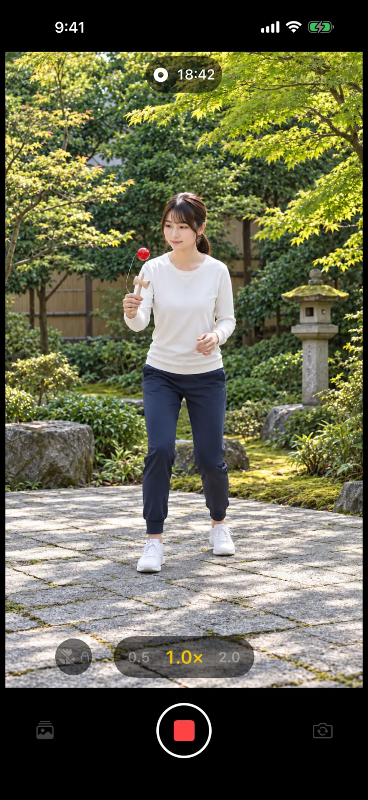
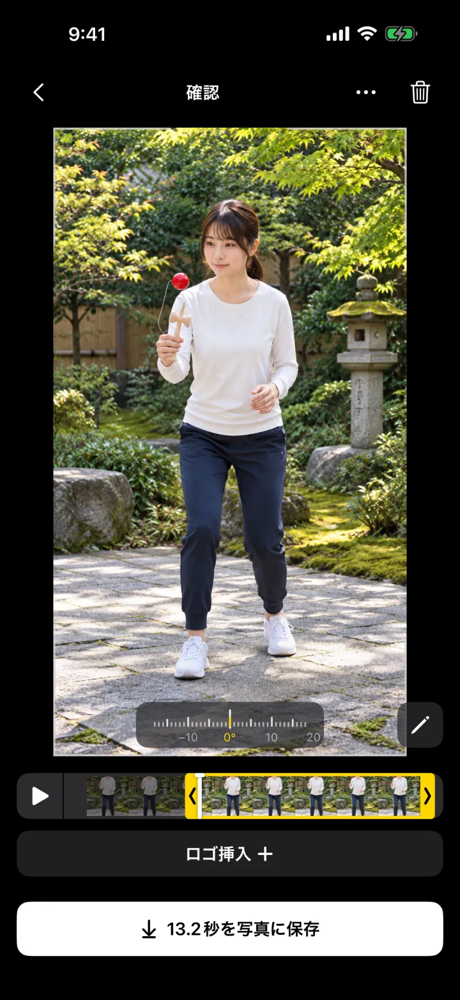
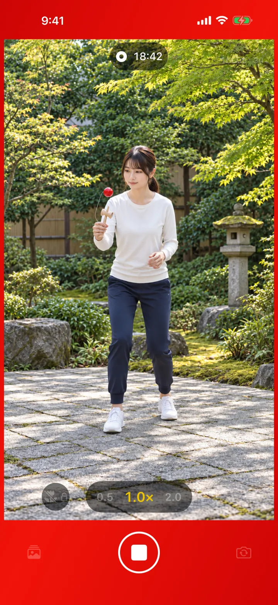
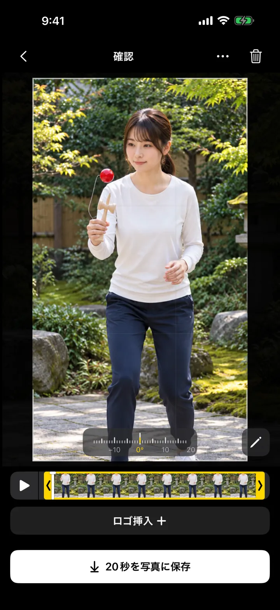
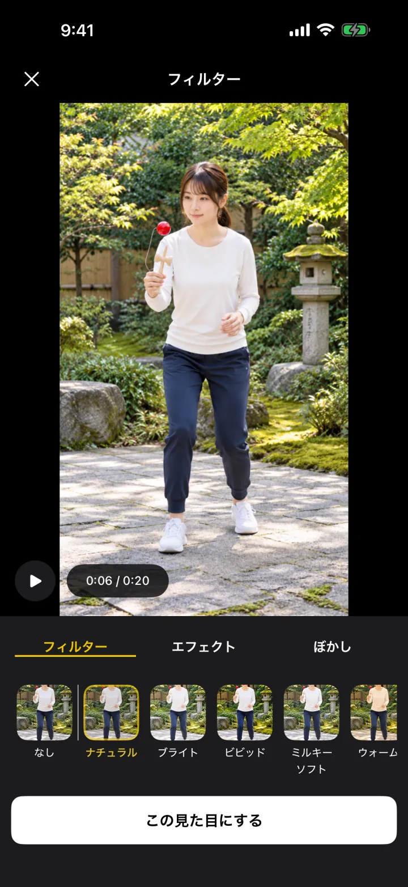
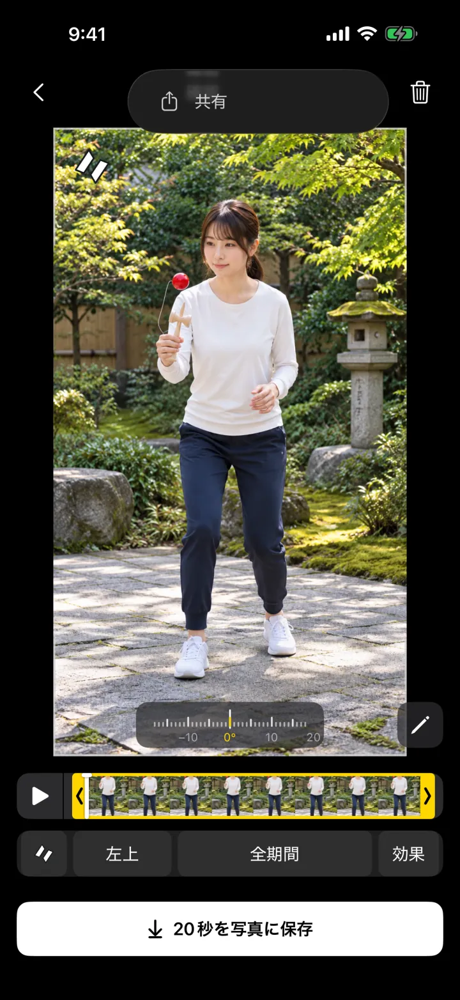
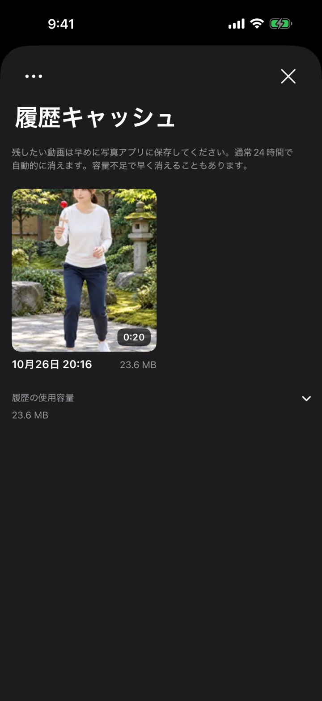

できたところだけ、残そう。
ダマレコは、けん玉の練習を撮るためのカメラアプリです。録画を回したまま練習して、決まったら止めるだけ。できた場面だけを、写真アプリに残せます。



しくみ
手元に残るのは、
いつも直近3分だけ。
録画中は、3分より前の映像をどんどん消していきます。だから長回しでも、容量が増え続けません。決まったら止めて、残したい場面を選ぶだけ。写真アプリに入るのは、その場面だけです。
-
置いて、録画を始める
iPhoneを三脚やスタンドに置いて、録画ボタンを押します。あとは練習に集中するだけです。
-
決まったら、止める
トリックが決まったら停止。止める前の最大3分が、確認画面に残ります。
-
場面を選んで、保存する
黄色い枠の両端で始まりと終わりを選び、写真に保存します。
録画中の表示
トリックに
集中できる。
録画できているか、離れると気になりますよね。録画中は画面のまわりに赤い帯が光るので、離れていてもひと目で分かります。
赤い帯は設定でオフにできます。

撮ったあと
撮影からポストまでを、
ミニマルに。
-

構図もその場で、かんたん調整
見せたいところを、ちょうどよく。録画後に映る範囲を動かしたり拡大したりして、構図を整えられます。傾きも1°ずつ直せます。
-

フィルターで、自分好みの雰囲気に
動画の色味を選んで、見せたい雰囲気に。桜や雪などのエフェクトも選べます。プレビューで確かめながら選べます。
-

ロゴを入れて、そのまま共有
止めたその場で、自分のロゴを入れて共有できます。投稿のたびに、編集アプリを開かなくても大丈夫です。
あと片づけ
整理された
ストレージ。
いらない動画を消すのは、地味に面倒です。写真に保存しなかった動画は、通常24時間でアプリから消えます。
- 写真アプリに保存した動画は、この整理では消えません
- 消える前なら、履歴から開いて別の場面を保存し直せます
- 空き容量が少ないときは、古いものから早めに消えます

そのほか
けん玉を撮るための、
ちゃんとしたカメラ。
- 4K・60fps対応するカメラで、4K・60fpsの撮影ができます。
- スロー撮影保存したあと、写真アプリでスローにする部分を調整できます。
- 前面・背面、縦・横前面・背面カメラと、縦向き・横向きの撮影に対応しています。
- 容量の目安撮影設定ごとに、必要な容量の目安と空き容量を確かめられます。
- 保存のやり直し保存に失敗しても、同じ設定のままやり直せます。
- 5つの言語日本語、英語、中国語（簡体字・繁体字）、ルーマニア語に対応しています。
よくある質問
知っておいてほしいこと
3分より前の映像は、あとから戻せますか？
戻せません。録画中は、直近3分より前の映像を順に消しています（スロー撮影では、さかのぼれる時間がさらに短くなります）。残したい場面ができたら、早めに止めてください。
撮った動画は、いつまでアプリに残りますか？
写真に保存しなかった動画は、通常約24時間でアプリから自動で消えます。空き容量が少ないときは、早めに消えることがあります。写真アプリに保存した動画はこの整理では消えないので、残したい動画は写真に保存してください。
保存した動画に、ダマレコのマークは入りますか？
入ります。保存・共有する動画には小さなダマレコのマークが入り、最後に約1.5秒のエンディングが付きます。
録画中に画面をロックしたり、ほかのアプリを開いたりしても大丈夫ですか？
録画は、ダマレコを開いている間だけ続きます。着信や画面ロック、アプリの切り替えで録画は止まります。録画中は、画面が自動でロックされないようにしています。長時間の撮影では、電池の消費や発熱が増えます。
撮った動画が、どこかへ送られることはありますか？
ダマレコが動画や音声を、開発者やGoogleへ送ることはありません。撮影した映像は端末の中で処理され、共有したときだけ、選んだ共有先に渡ります。アプリの改善のため、利用状況や不具合の情報はFirebaseで計測しています。詳しくはプライバシーポリシーをご覧ください。
どの機種で使えますか？
iOS 18以上のiPhoneで使えます。カメラとマイクの許可が必要で、保存するときは写真への追加を許可してください。使える機能は機種によって異なります。
できたところだけ残せるカメラ。